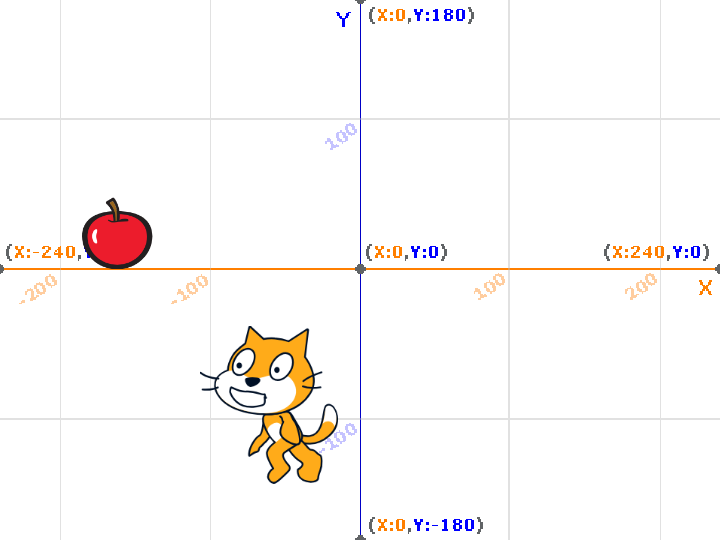

1週目のレポート ： 公大高専１年実習I-1
4b班27番 西田大翔
第1週目
1-1 サイエンスアート
1.内容
スクラッチを使って線を書くプログラムを繰り返して絵を描く。
2.感想
様々なブロックを使って一つのプログラムを組み立てていくのがこのスクラッチだったが、プログラミングは もっと細かくしていくため、わかりやすく最初にするならよかったと思いました。
1-2 ゲーム

1.内容
リンゴを上から落として下にいる猫で受け取り点数を稼ぐゲーム。
2.感想
乱数を設定し、その間の数でリンゴの発生地点を決めていたのでいつもやっているゲームなど のプログラムなどは高度になっているのだなあと再確認し、プログラマーなどの方はとても苦労されているのだなあと感じた。
1-3 ホームページ作成
私のホームページ
1.内容
htmlを活用し、自分の自己紹介や自分のレポートを書く。
2.感想
基本的にパソコン関係ではいろいろなプログラミングが使われており、ホームページを作るにはhtmlなどを使い、色を付けるには別の プログラミング言語を使うのだと調べて分かった。そしていろいろなプログラミングが組み合わさってアプリケーションやなどが 使われていることが再認識することができた。